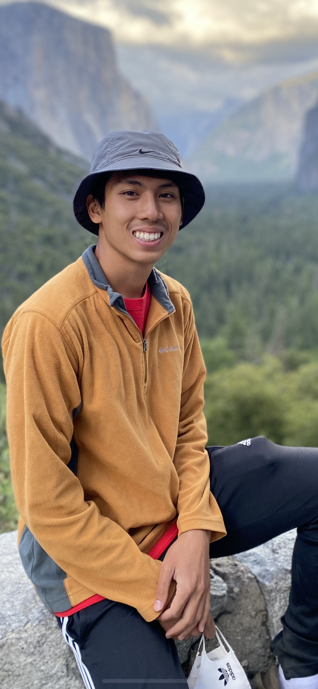
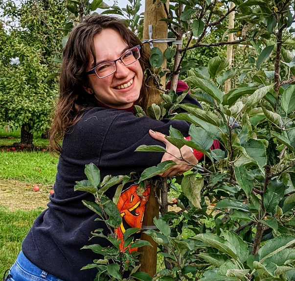
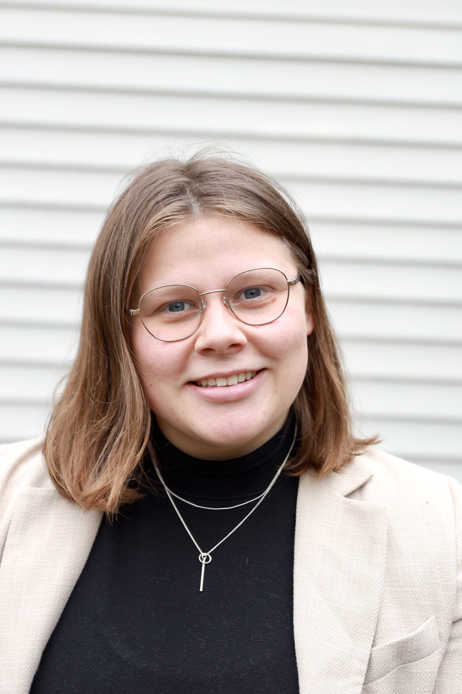
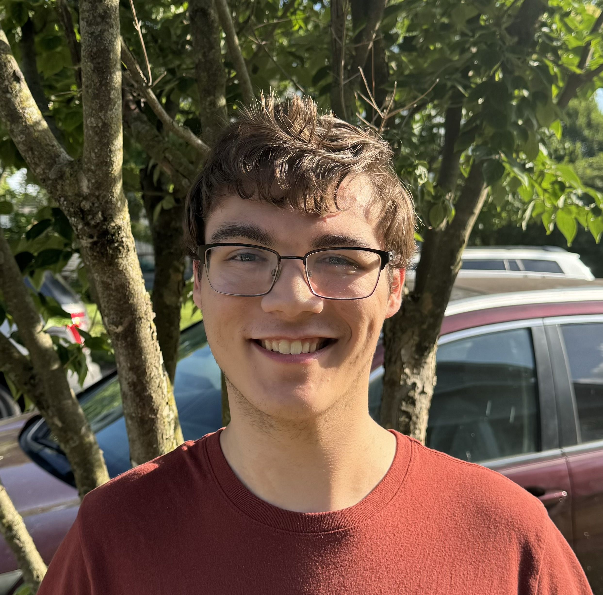
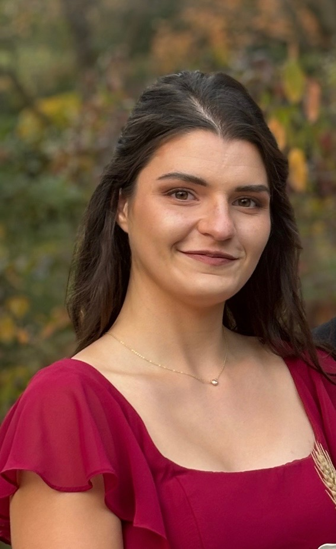
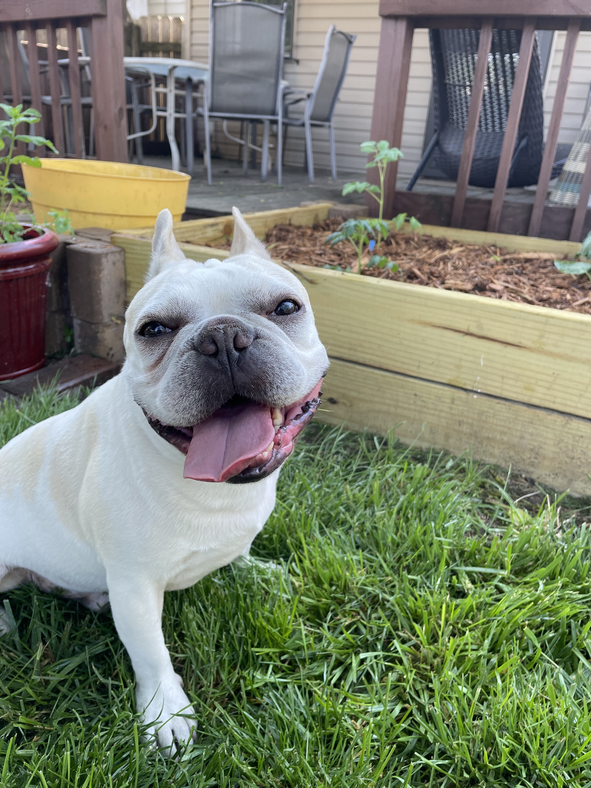

Current lab members
Graduate students
Daniel Quiroz Moreno
Degree: Ph.D.
Program: Horticulture and Crop Science
Years in the lab: 2021 - present
Education:
- B.S. Biotechnology, Ikiam University (Tena, Ecuador)
- M.S. Horticulture and Crop Science, The Ohio State University (Columbus, OH)
Research focus: Multi-omic integration for crop nutritional improvement, with a focus on developing informatic tools
Non-work interests: photography, mountain biking
Hometown: Riobamba, Ecuador
Contact: quirozmoreno dot 1 at osu dot edu
Personal website: https://danielquiroz97.gitlab.io
Daniel Do

Degree: Ph.D.
Program: Food Science and Technology
Years in the lab: 2021 - present
Education:
- B.S. Chemistry & Biochemistry and Molecular Biology, Stockton University (Stockton, NJ)
Research focus: Elucidating the in vivo relevance of tomato steroidal alkaloids: an understanding of their absorption, metabolism, accumulation, and bioefficacy
Non-work interests: running, cooking, climbing, roller skating
Hometown: Galloway, NJ, USA
Contact: do dot 226 at osu dot edu
Aaron Wiedemer

Degree: Ph.D.
Program: Food Science and Technology
Years in the lab: 2022 - present
Education:
- B.S. Food Science (minor in Jazz Performance), Penn State University (University Park, PA)
Research focus: Modifying and analyzing health beneficial compounds from crops
Non-work interests:
Hometown: Chatham, NJ, USA
Contact: wiedemer dot 7 at osu dot edu
Lydia Balogh

Degree: Ph.D.
Program: Horticulture and Crop Science
Years in the lab: 2022 - present
Education:
- B.S. Biology, minor in English Language and Literature, University of Western Ontario (London, Ontario, Canada)
- M.S. Horticulture and Crop Science, The Ohio State University (Columbus, OH)
Research focus: Apple improvement using genomics, metabolomics, and sensory science
Non-work interests:
Hometown: London, Ontario, Canada
Contact: balogh dot 67 at osu dot edu
Mia Scott

Degree: Ph.D.
Program: Horticulture and Crop Science
Years in the lab: 2025 - present
Education:
- B.S. Biological Engineering, The Ohio State University
Research Focus: leveraging multi-omic technologies for crop quality improvement
Non-work interests: tennis, biking, craft beer and wine , and live music
Hometown: Downers Grove, IL, USA
Contact: scott dot 2293 at osu dot edu
Ebony Thornton
Degree: Ph.D.
Program: Food Science and Technology
Years in the lab: 2025 - present
Education:
- B.S. Chemistry, South Carolina State University (Orangeburg, SC)
- M.S. Food and Nutritional Sciences, North Carolina Agricultural and Technical State University (Greensboro, NC)
Research focus: Research focus: Analyzing beneficial health compounds in fruit and vegetable crops through metabolomics
Non-work interests: Non-work interests: Trail-ride line dancing, Latin dancing (salsa, bachata, merengue, and more), and eating delicious food
Hometown: Hometown: Sumter, SC, USA
Contact: thornton dot 589 at osu dot edu
Research staff
Maria Sholola, Ph.D.
Years in the lab: 2020 - present
Education:
- B.S. Chemistry, Loyola University (Chicago, IL)
- Ph.D. Food Science and Technology, The Ohio State University (Columbus, OH)
Research focus: Understanding absorption, metabolism, and bioactivity of tomato and soy phytochemicals
Non-work interests: dancing (urban, Afrobeats, and more recently ballet), running and biking scenic routes (hasn’t found one that tops Chicago’s lakefront trail yet), and traveling
Hometown: Chicago, IL, USA
Contact: sholola dot 1 at osu dot edu
Undergraduate students
Bryce Reiter

Degree: B.S.
Program: Chemistry
Years in the lab: 2024 - present
Non-work interests: hiking, reading, and cooking
Hometown: Republic, OH, USA
Contact: reiter dot 121 at osu dot edu
Julianne Littin

Degree: B.S.
Program: Sustainable Plant Systems
Years in the lab: 2025 - present
Non-work interests: reading, strength training, being outdoors, and learning new skills
Hometown: Toledo, OH, USA
Contact: littin dot 4 at osu dot edu
Lab pets
Nacho Cooperstone

Degree: Working on basic obedience
Years in the lab: 2018 - present
Interests: snoring during Zooms, rolling around in the dirt after a bath, high fat dairy, splooting, taking walks as long as its not too hot
Hometown: Columbus, OH, USA